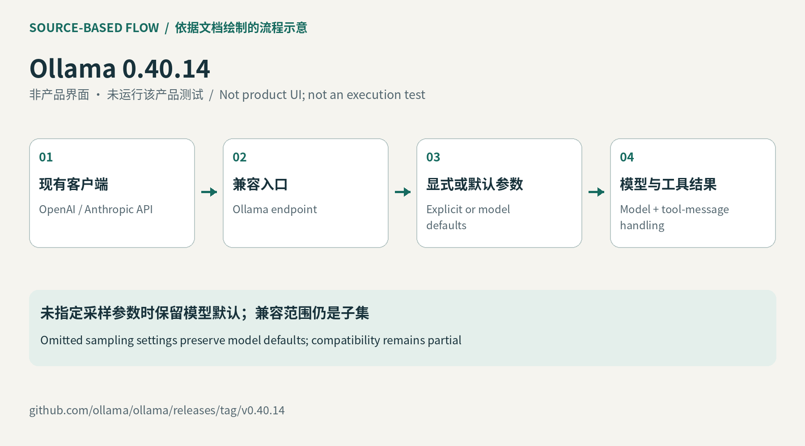

同一模型经不同入口应少些意外差异
开发者常把现有OpenAI客户端改成Ollama地址，以便替换模型而保留应用结构。0.40.14修复了一个不显眼但会影响行为的差别：客户端没有传temperature或top_p时，兼容端点改用模型打包的默认值，不再统一覆盖为1.0。这减少了“换接口后回答风格变了”的一个来源，但仍不能保证两次生成完全相同。已有实验如果依赖旧默认值，应明确写出参数并重新对照，避免把兼容层变化误当成模型能力提升或退化。
Ollama 0.40.14 · 开源运行时更新

开发者常把现有OpenAI客户端改成Ollama地址，以便替换模型而保留应用结构。0.40.14修复了一个不显眼但会影响行为的差别：客户端没有传temperature或top_p时，兼容端点改用模型打包的默认值，不再统一覆盖为1.0。这减少了“换接口后回答风格变了”的一个来源，但仍不能保证两次生成完全相同。已有实验如果依赖旧默认值，应明确写出参数并重新对照，避免把兼容层变化误当成模型能力提升或退化。
Ollama的Codex入口会准备专用配置和模型目录，让用户在会话中切换已经安装、支持工具的模型。新版另在写配置前检查ChatGPT路由，无法使用时报告明确错误。对用户来说，这把一部分问题从“代理启动后为什么没有工作”移到设置阶段。官方文档也提供恢复生成配置的入口，说明启动器管理的内容有自己的边界。接入失败时先识别路由、模型和客户端三层，会比反复改提示更有效；提示内容无法修复尚未建立的服务连接。
Claude Code集成通过Anthropic兼容API连接本地或云模型。补丁让启动器使用所选模型的输出token上限，避免云模型撞到此前的128k默认限制。集成文档另建议为代码库任务配置足够大的上下文，本地模型通常需要至少64k设置。一个是单次生成能输出多少，另一个关系到能容纳多少输入资料，不能把数字直接互换。实际使用仍要考虑机器内存、仓库大小和工具能力；本次没有安装模型，也没有把厂商修复说明当成大型仓库任务一定成功的证据。
发行说明还修正云搜索压缩响应的解码，并保留Responses请求中包括既有拒答在内的可读输入。它们改善的是消息传递的完整性，不能把Ollama称为远端API的完整替代品。兼容文档明确只支持部分接口，直连云端不提供有状态Responses、该端点内置搜索及某些自定义工具重放。迁移时应该列出应用真正使用的调用形态，分别检查聊天、工具结果和历史消息。能得到一次文本回答，并不足以证明长代理循环保持同样语义。